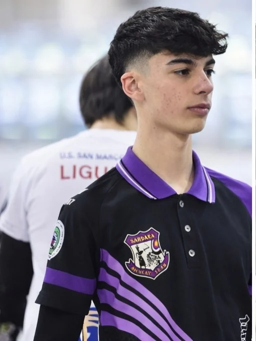
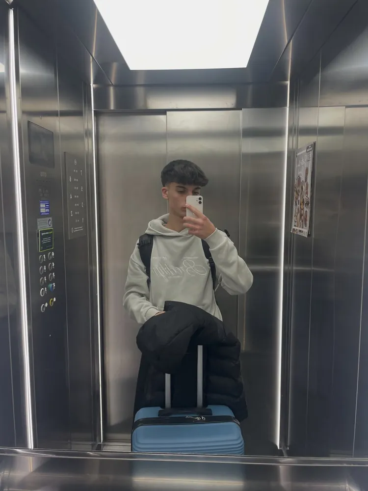
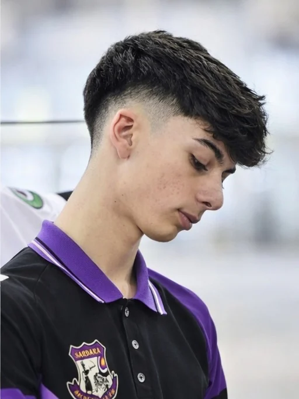
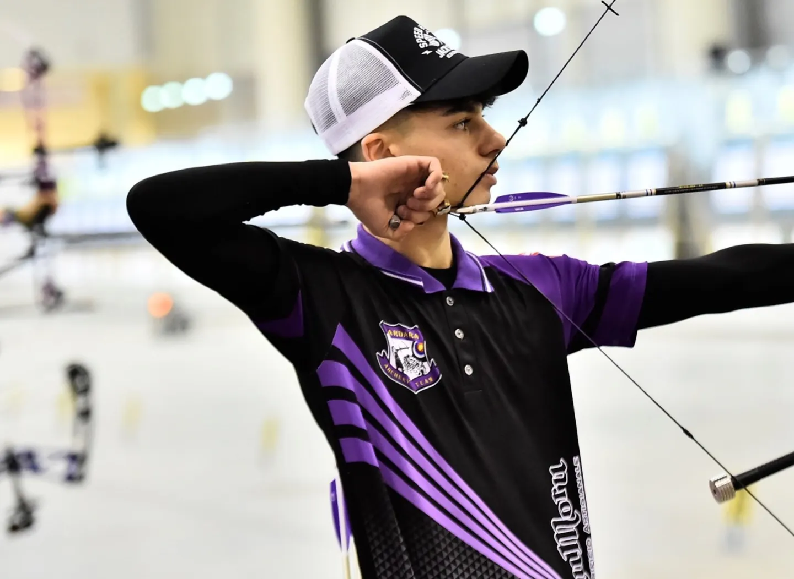
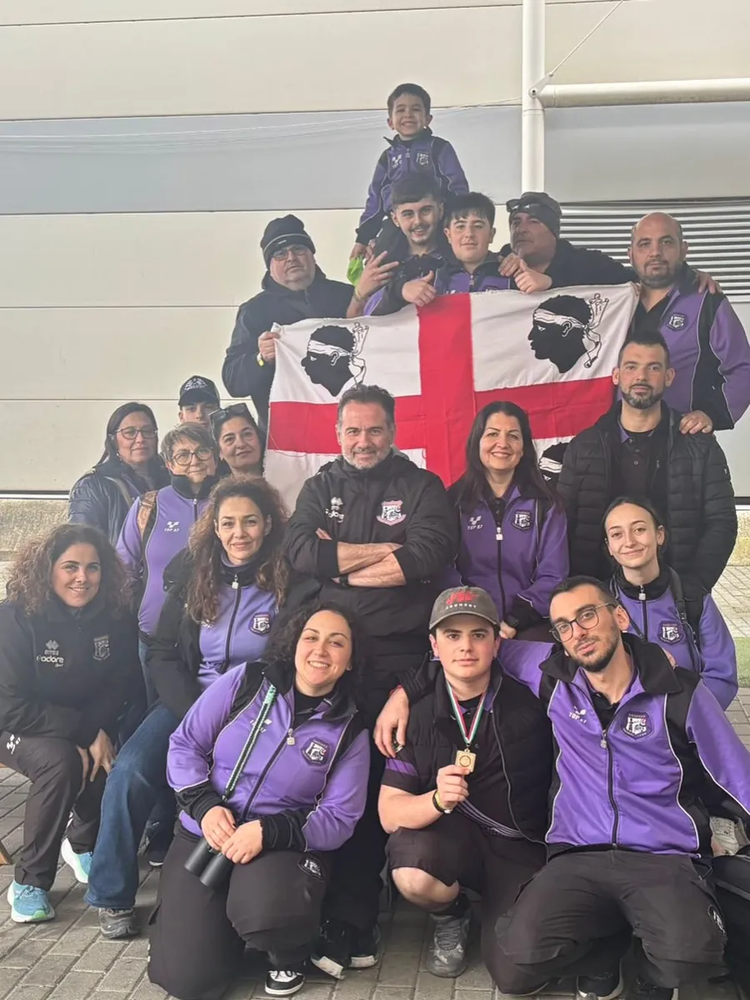
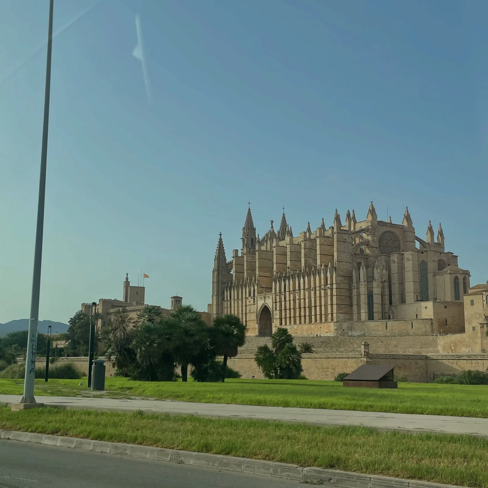
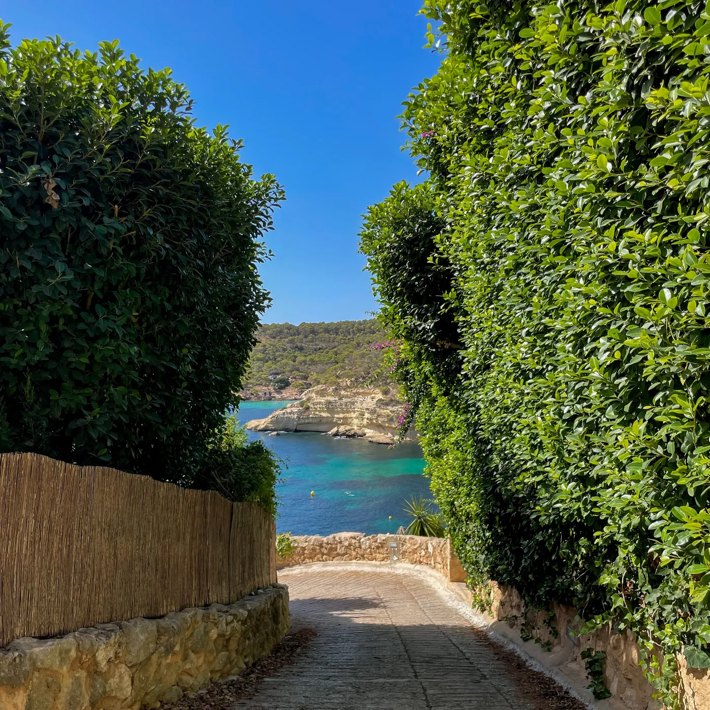
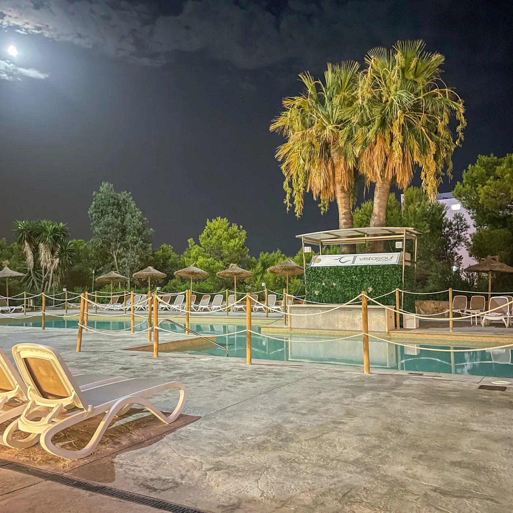
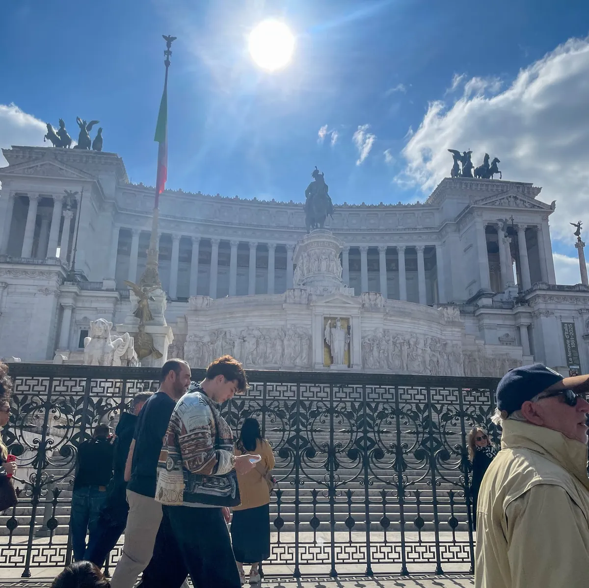

Noah Melis
Scorri
Italiani Indoor 2026 · Roma

Mi chiamo Alessandro Noah Melis, per tutti Noah. Sono di Sardara, classe 2008. Faccio l'Othoca, indirizzo informatico, tiro soprattutto con l'arco compound e in Mockly costruisco siti.
- NomeAlessandro Noah Melis
- Classe2008
- Vivo aSardara
- ScuolaITIS Othoca, OristanoIndirizzo informatico
- SportArco compoundSardara Archery Team
- GaraItaliani Indoor 2026Roma
- MusicaGemitaiz, MadMan, Nayt, 22Simba, Promessa e altri
- ViaggiLa Spagna, prima di tutto
- MocklySviluppo, interfaccia e GoogleCon Adriano e Simone
Tre cose
di me
Tocca una voce per aprirla.
-

Studente
Classe 2008. Faccio l'ITIS Othoca di Oristano, indirizzo informatico.
-

Sviluppatore
Con Adriano e Simone faccio parte di Mockly, che fa siti su misura per le attività della Sardegna.
Io mi occupo di sviluppo, interfaccia e visibilità su Google.
Il portfolio -

Arciere
Tiro soprattutto con l'arco compound, con il Sardara Archery Team di Sardara.
Nel 2026 ho gareggiato agli Italiani Indoor di Roma.
Guarda l'Arco
Arco
compound
Sardara Archery Team. Italiani Indoor 2026, Roma.

Scorri per centrare
Italiani Indoor 2026 · Roma
Roma 2026

Spagna
Qualche foto da Maiorca, poi Roma e il mare.




Cosa
ascolto
La mia playlist, come se fosse aperta sul telefono. Clicca un artista.
Cosa ascolto
Noah Melis · 12 artisti